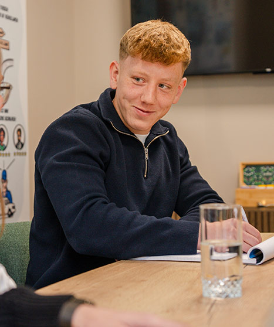
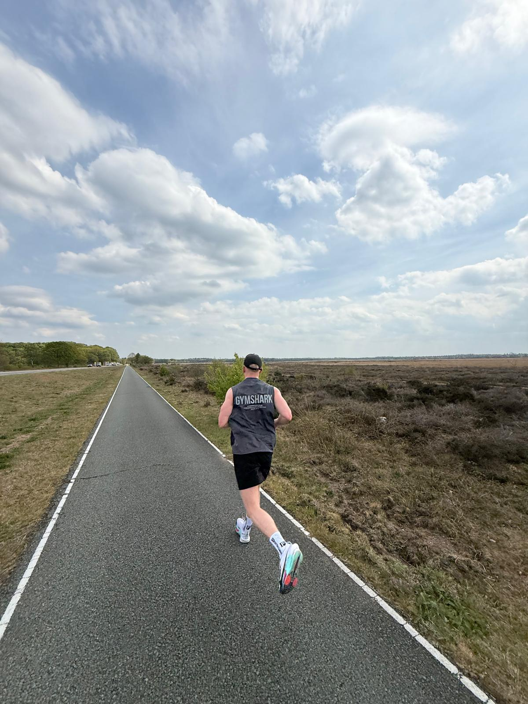
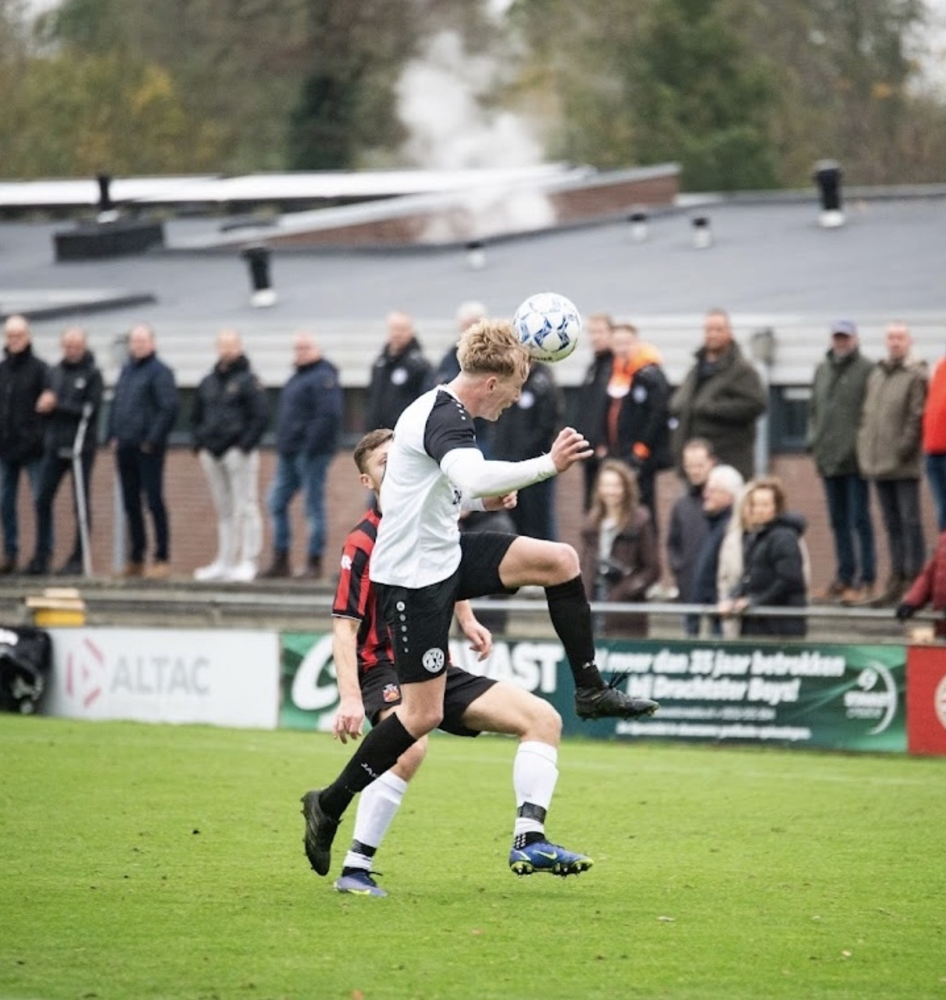

Ik ben Bert-Jan Russchen, jonge ondernemer met jarenlange werkervaring in marketing. Vanuit die praktijkkennis en een half jaar programmeren aan Harvard University help ik ondernemers in de sportwereld aan een sterke, visueel aantrekkelijke online strategie.



Sport is voor mij meer dan een hobby, het is wat mij drijft om juist sportondernemers te helpen. Na jarenlange werkervaring in het marketingvak besloot ik voor mijzelf te beginnen. Die praktijkkennis neem ik mee, aangevuld met een half jaar programmeeropleiding aan Harvard University.
Mijn doel is samen groeien naar succes, met ondernemers in de sportwereld die klaar zijn voor een goede én visueel sterke online strategie. Het totale plaatje telt: van merkidentiteit en website tot een aanpak die écht aansluit bij wie jij bent.
De combinatie van sport, marketing en procesdenken maakt mijn aanpak uniek.
Sport zit in mijn DNA. Als actief sporter begrijp ik de wereld van sportbedrijven van binnenuit, hun uitdagingen, hun klanten en wat hen uniek maakt. Dat begrip vertaalt zich direct in sterkere content en een relevantere online aanwezigheid.
Van SEO tot social media, ik weet hoe je online opvalt in een competitieve markt. Niet met losse trucjes, maar met een samenhangende strategie die past bij jouw merk en doelgroep in de sportwereld.
Slimmer werken, niet harder. Ik analyseer hoe jouw bedrijf draait, breng inefficiënties in kaart en bouw automatiseringen die uren per week besparen. Meer tijd voor je sporters, minder tijd aan administratie.
Ik ben geen groot bureau met tientallen medewerkers. Ik ben één persoon die zich volledig inzet voor jouw project, met de mentaliteit van een sporter: consistent, gedisciplineerd en altijd gericht op het beste eindresultaat.
De beste strategie is één die past bij wie je bent, en voor mij begint dat altijd bij sport.
Bert-Jan Russchen